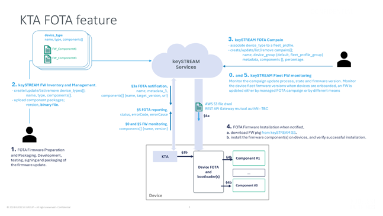
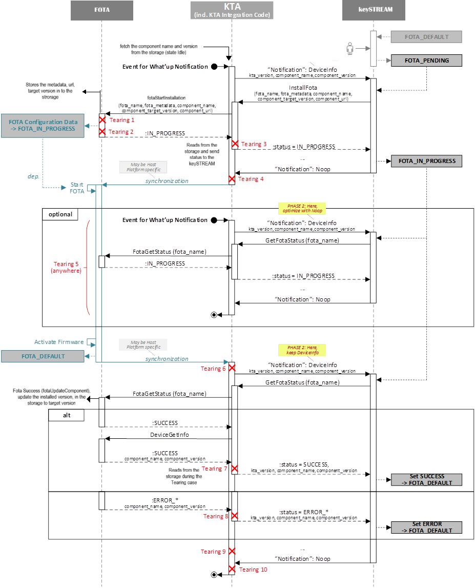
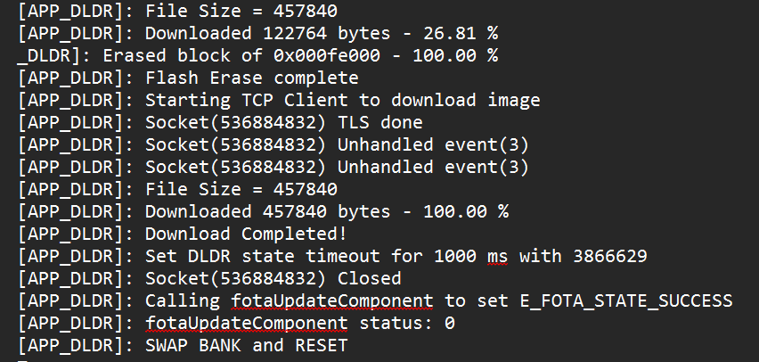
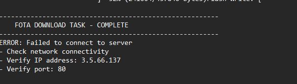

This guide provides a comprehensive overview of the Firmware Over-The-Air (FOTA) integration process using the keySTREAM Trusted Agent. It covers all essential steps, API details, storage requirements, and best practices to ensure secure, reliable, and maintainable FOTA operations for your product.
Note: FOTA integration and usage can be performed and evaluated only on the Trust Platform Design Suite (TPDS) application. Ensure you have the latest TPDS application installed, along with the keySTREAM Connect extension, to enable full FOTA functionality and testing.
Note: Version is currently a free-form string of Max 16bytes.
Note: Fota Agent can be used as it is or integrator can also re-write Fota as per there need.
Overview
Overview quick links:
Note: Implement fotaplatform.c first, then validate using the sequence diagram.
FOTA Overview (keySTREAM <-> Device)
This section summarizes how the keySTREAM ecosystem and the device (running the Trusted Agent / KTA) collaborate across the full firmware update lifecycle.
- Firmware Preparation & Packaging – Build, test, sign, encrypt the binary; generate component metadata (name, version, size, hash, signature).
- Inventory & Publication – Upload/package artifact into keySTREAM; it becomes visible in the firmware inventory/catalog.
- Campaign Planning & Targeting – Define the deployment campaign (target device group / criteria, rollout schedule).
- Distribution / Download – Device (via Agent + Platform) retrieves download URL/metadata and downloads component payload(s) securely.
- Installation & Verification – Platform installs components, verifies integrity/signature, updates installed snapshot and reports progress.
- Fleet Monitoring & Compliance – keySTREAM tracks campaign status, per‑device success/error, and aggregate compliance; device reports final state & versions.

FOTA Sequence
Below is the sequence diagram illustrating how the FOTA storage APIs are used, detailing the process flow and interactions for each API:

FOTA Modules
The FOTA system consists of three core modules that handle different aspects of the firmware update process:
1. FOTA Agent
- (Agent implementation) – part of KTA package (can be reused or rewritten)
- Component Validation: Validates firmware components received from the keySTREAM server, including component details and version verification
- Metadata Management: Stores campaign metadata and manages FOTA installation URLs
- Status Monitoring: Tracks installation progress and reports status updates to keySTREAM
- Device Information: Communicates installed component versions and device capabilities to keySTREAM server
2. FOTA Process
- (Process logic) – provided; integrator may rewrite
- Version Comparison: Compares server-provided component versions with locally installed versions
- Campaign Management: Stores and updates FOTA campaign information
- Component Updates: Manages the component update lifecycle and state transitions
3. FOTA Platform
Integrator Implementation Required
Required APIs:
fotaPlatformGetComponents – Return current installed component versionsfotaStartInstallation – download + install workflow- Persist campaign metadata, target component (name, version, URL)
- Download, verify and install each component; call
fotaUpdateComponent after each
- Maintain resumable state across reset/power loss (state + target components + URL + metadata)
- Provide accurate installed component list on request
- Handle errors and partial progress gracefully (retry / leave state for resume)
Implementation Guidelines:
fotaPlatformGetComponents
- If state = success/idle: load installed list and fill output array
- If state = in_progress/error: return last known installed versions (pre-update) so agentcan reflect progress
- Map result to status codes: success / error / in_progress
fotaStartInstallation
- Validate inputs (metadata pointer/length, component list not NULL)
- Persist metadata + target component list + URL(s) before starting work
- Record state = in_progress, then create/start the install thread/task and return
- Thread performs: per-component download -> install -> [
fotaUpdateComponent(#fotaStartInstallation)
- On completion: update state (success / error) and persist final installed versions
API Details
Source File:
Source Files\config\default\library\kta_lib\SOURCE\kta\modules\fotaservices\fotaplatform.c
1. fotaPlatformGetComponents()
Use: Agent calls this to check what is installed. Must: xpComponents not NULL; fill each entry (name + version). Returns:
E_K_FOTA_SUCCESS data filledE_K_FOTA_IN_PROGRESS update running (return last known installed set)E_K_FOTA_ERROR problem reading data
2. fotaStartInstallation()
void fotaStartInstallation(const void *xpFotaMetadata,
size_t xFotaMetadataLen,
const TTargetComponent *xpComponents);
Flow (typical):
- Validate pointers / lengths.
- Persist metadata + target component list (+ URLs) first.
- Set state = in_progress.
- Spawn install task/thread.
- Worker: download -> install -> call
fotaUpdateComponent() after each.
3. fotaUpdateComponent()
size_t componentNameLen,
const uint8_t *componentVersion,
size_t componentVersionLen,
SAL FOTA Storage Requirements
The platform must persist a small, well‑defined set of items so updates can resume after reset and the agent can always report an accurate state.
Storage Access APIs:
salFotaStorageWrite() (write / update)
salFotaStorageRead() (read / load)
| Storage ID | Max Size | Contents / Format (Example) | Purpose / Usage |
FOTA_STORAGE_STATE_ID | 1 byte | State enum | Resume logic & status reporting |
FOTA_STORAGE_NAME_ID | 16 bytes | Device / platform name (ASCII) | Identification / optional reporting |
FOTA_STORAGE_INSTALLED_COMPONENT_ID | 5 bytes | Packed current versions snapshot* | Baseline for comparison & reporting |
FOTA_STORAGE_TARGET_COMPONENT_ID | 5 bytes | Packed target versions snapshot* | Resume / retry campaign after interruption |
FOTA_STORAGE_URL_ID | Impl. defined | Last/active download URL | Retry without new campaign fetch |
FOTA_STORAGE_METADATA_ID | 32 bytes | Campaign / firmware metadata blob | Identification & integrity context |
- Access (read / write) is performed through the [FOTA Storage API]
Implementation Guidelines
- Persist: state, target components, URL and metadata before starting installation logic.
- Always write state first =
in_progress before downloads begin.
- After each component success/failure, update installed snapshot (optional mid‑campaign) if power loss risk is high.
- On completion: atomically (or ordered) write installed snapshot then state =
success or error.
- Validate reads (length, simple CRC or checksum) before using data; fall back to
idle if invalid.
- Avoid excessive flash wear (batch writes, compare-before-write).
- Treat URL as volatile: overwrite only when campaign changes.
- Use defensive bounds checking when copying variable length version strings.
Version String Note: Version is free‑form. Select a fixed internal maximum suited to your MCU (e.g. 8, 12, 16 bytes). Enforce truncation or rejection rules consistently when packing installed / target snapshots.
API Details
Files:
Source: Source Files\config\default\library\kta_lib\SOURCE\salapi\k_sal_fotastorage.c
Header: SOURCE\salapi\include\k_sal_fotastorage.h
Purpose: MCU‑specific persistence layer for all FOTA state items (state enum, installed + target version snapshots, campaign metadata, download URL, device/name ID). Provides a simple keyed abstraction over flash / EEPROM / other NVM.
bool salFotaStorageWrite(uint32_t xStorageDataId,
const uint8_t *xpData,
size_t xDataLen);
bool salFotaStorageRead(uint32_t xStorageDataId,
uint8_t *xpData,
size_t *xpDataLen);
Purpose: MCU‑specific persistence layer for FOTA metadata, state, target + installed version snapshots, URL and campaign metadata.
Integration Notes
- All listed items must be implemented for reliable FOTA behavior.
- Persistent snapshots enable resume instead of full restart after failure.
- Include minimal integrity verification (length + CRC) for each block.
- Keep writes idempotent; avoid partial updates by ordering or staging.
FOTA Integration Outcomes
Success Case
After successful integration and execution of the FOTA workflow, you will observe the following result:

- The firmware update completes successfully.
- All components are updated and reported to keySTREAM.
- Device state and component information are accurately reflected in persistent storage.
Error Case
If the firmware download or installation fails, the following process occurs:

- keySTREAM will resend the update URL to the device for retrying the firmware update.
- The application logic can choose to use the new URL provided by keySTREAM or the URL stored in persistent storage.
- Error handling and recovery mechanisms should be implemented to ensure robust update management and minimize downtime.